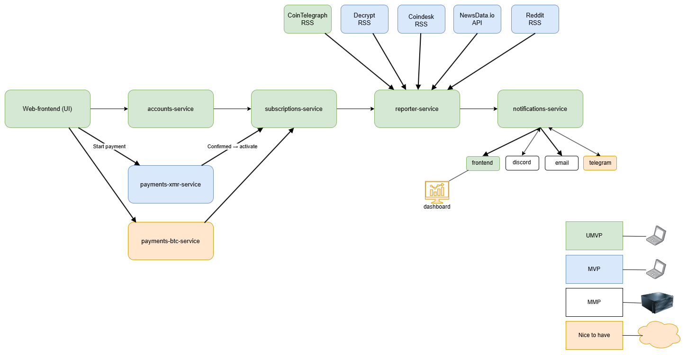

Nova Report - Examensarbete för nyhetsanalys och notifiering
Ett examensarbete inom systemintegration som fokuserar på att bygga en modulär mikrotjänst-arkitektur
där nyhetsdata, AI-analys, kryptobetalningar och notifieringar kopplas samman till en enhetlig plattform.
Målet är att visa hur flera externa API:er och datakällor kan integreras säkert, skalbart och automatiserat.
Projektmål
Utveckla en backend bestående av flera mikrotjänster i Spring Boot som samverkar via REST-API:er.
Integrera RSS-flöden och API:er från nyhetskällor (CoinTelegraph, Decrypt, Coindesk, Reddit, NewsData.io).
Analysera och sammanfatta nyhetsflöden med hjälp av AI för att skapa användbara notifieringar.
Möjliggöra betalningar via kryptovaluta för prenumerationstjänster.
Distribuera notifieringar till användare via Discord, Telegram, e-post eller webb-dashboard.
Demonstrera en professionell integrationslösning med CI/CD-flöde och containerbaserad drift.
Teknisk miljö
Backend: Java 21, Spring Boot 3, Spring Security, REST-API:er
Databas: H2 för utveckling, PostgreSQL för produktion
AI-integration: OpenAI – sammanfattning och sentimentanalys
Datakällor: RSS-flöden + NewsData.io-API
Betalningar: Monero och Bitcoin-integrationer via separata services
DevOps: Docker, GitHub Actions, CI/CD-pipeline för automatisk build och deploy
Arkitektur
Plattformen är uppbyggd som ett nätverk av mikrotjänster där varje komponent har ett tydligt ansvar.
reporter-service agerar som datainsamlare och analysmotor,
subscriptions-service hanterar användarens aktiva prenumerationer,
och notifications-service distribuerar sammanställd information till användaren.
Betaltjänsterna för XMR och BTC hanterar betalningar. Jag valde att integrera betalningar via kryptovaluta i detta projekt då jag redan integrerat Stripe för kort och Klarna-betalningar i mina tidigare projekt och jag vill hela tiden lära mig nya saker.
accounts-service: Hantering av användarkonton, API-nycklar och autentisering.
payments-btc/xmr-service: Initierar och verifierar kryptobetalningar.
subscriptions-service: Aktiverar eller stänger prenumerationer beroende på betalningsstatus.
reporter-service: Samlar in RSS-flöden, filtrerar, sammanfattar och analyserar innehåll via AI.
notifications-service: Distribuerar analyser och notifieringar till E-post, Discord, Telegram och frontend.

Översikt över plattformens mikrotjänster och dataflöden mellan frontend, backend och externa API:er och RSS-flöden.
Utvecklingssteg
Projektet utvecklas iterativt i fyra definierade faser, från ett funktionellt minimum till en marknadsfärdig produkt.
Varje steg representerar ett färgkodat stadium i arkitekturdiagrammet.
UMVP (Ultra Minimal Viable Product) – Grunden: RSS-insamling från en källa, enkel AI-sammanfattning, utskrift i frontend, lokal drift.
MMP (Minimal Marketable Product) – Integration av betalningstjänster (XMR), e-post och dashboard, driftsätta på dedikerad server.
Nice to have – Integration av betalningstjänst (BTC), Telegram-integration samt driftsätta i molnet.
Tidslinje
Vecka 1: Förstudie, datakällor, systemdesign, PoC för reporter-service.
Vecka 2: Få upp en Ultra Minimal Viable Product som levererar en rapport från ett RSS-flöde.
Vecka 3: CI/CD och prenumerations- och kontohantering.
Vecka 4: Kryptobetalning och verifiering.
Vecka 5: Dashboard och e-postintegration (MMP).
Vecka 6: Telegram-integration, testning och säkerhetsgranskning.
Vecka 7: Dokumentation och förberedelse för demo.
Vecka 8: Slutpresentation och portfolio-release.
Centrala frågeställningar
Kryptomarknaden och tekniksektorn präglas av en enorm informationsmängd, tusentals artiklar,
forumtrådar och sociala flöden som ofta är partiska, fragmenterade eller fyllda med brus.
Nova Report undersöker hur moderna integrationsmönster och AI kan användas
för att strukturera detta informationskaos och leverera faktabaserade insikter i realtid.
Plattformen fungerar som en “Crypto Briefing-as-a-Service”: den samlar nyheter från flera källor,
filtrerar bort upprepningar och brus, låter en AI-modul skriva sammanfattningar
och levererar sedan resultatet direkt till användaren via E-post, Discord eller dashboard.
Det är ett praktiskt exempel på hur AI, dataintegration och säkerhetsdesign kan samverka i en verklig miljö.
Vad betyder “Crypto Briefing-as-a-Service”?
Uttrycket är en lek med SaaS-begreppet (Software as a Service), alltså molnbaserade tjänster
som levererar färdig funktionalitet till användaren utan att denne behöver installera något själv.
“Crypto Briefing-as-a-Service” betyder därför i praktiken: en automatiserad tjänst som samlar, filtrerar,
analyserar och sammanfattar nyheter från kryptovärlden och levererar färdiga, lättlästa rapporter
direkt till användaren.
Hur kan AI användas för att skapa tillförlitliga insikter från stora, brusiga nyhetsflöden?
Fokus ligger på textanalys, sammanfattning och källfiltrering, inte att ersätta journalistik, utan att ge en snabbare och mer fokuserad överblick.
Hur kan en modulär arkitektur balansera enkelhet, prestanda och skalbarhet?
Genom att separera tjänster som betalning, rapportering och notifiering skapas en robust och utbyggbar helhet.
Hur kan en integrationslösning paketeras pedagogiskt och transparent?
Målet är att skapa en lösning som inte bara fungerar tekniskt utan också demonstrerar integrationsflöden,
säkerhetsaspekter och datahantering på ett sätt som är tydligt för både tekniska och icke-tekniska mottagare.
Utvecklingslogg
Kort veckologg över projektets framsteg. Klicka på en vecka för att läsa mer.
Vecka 1 – Planering och grundläggande arkitektur
Fokus: Denna vecka har jag fokuserat på att skapa grunderna i projektet, mycket har handlat om att sätta upp en plan som går att genomföra under dom kommande 8 veckorna och hur jag ska göra det.
Eftersom jag gör detta projekt helt själv så har jag bestämt mig för att använda Githubs Copilot-funktion för att agera som en senior utvecklare som kollar igenom mina PR och gör reviews. Eftersom jag gillar att vara strukturerad
så gjorde jag också en grundläggande "mindmap" över projektet så jag lätt kan ta en titt och få bekräftat visuellt att jag är på rätt väg. Jag har också en tanke om att kanske sätta upp en "kanbanboard" för att göra
det enklare att se vilka uppgifter som är klara och vilka som är på gång.
Hinder: Än så länge har jag inte stött på några större hinder utan det har mest handlat om att få ner vad jag har i huvudet "på papper" och att göra en grundläggande planering.
Nästa steg: Under kommande vecka så tänker jag försöka bli klar med en UMVP där en användare kan registrera sig, logga in och se en genererad rapport från endast en informationskälla direkt på en minimal frontend.
Vecka 2 – TBD
Fokus: Under denna vecka har jag färdigställt en UMVP där en användare kan registrera sig, logga in och se en genererad rapport från endast en informationskälla direkt på en minimal frontend.
Under helgen så fick jag också ai-integrationen att fungera där jag använder gpt-4o-mini-modellen från 1minAI för att sammanställa en rapport med reporter-service. Jag valde att integrera 1minAI då jag har massa gratiskredit liggandes på den tjänsten.
Hinder: Största hindret denna vecka har varit att få Copilot på Github att bli nöjd med koden. Varje gång jag har gjort en commit så fick jag mellan 8-14 kommentarer från Copilot att åtgärda. När jag fixat dom så fick jag ytterligare ett gäng. Så det tog väldigt lång tid att få en "accepterad" PR.
Nästa steg: Denna vecka tänker jag fokusera på att försöka få till CI/CD, ett flöde mellan min laptop, github actions, vidare till dockerhub och till sist till en ubuntu-server på Contabo. Om jag hinner så vill jag också lägga till mer nyhetskällor för att få en mer omfattande rapport.